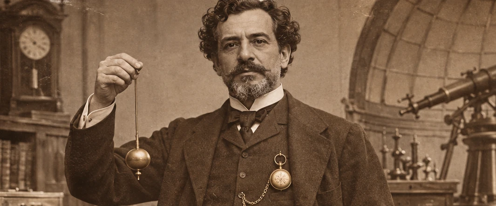

MEMORIAL DO FUNDADOR / CURITIBA, 1893
O minuto de Elias.

Às seis da manhã de 17 de julho de 1893, Elias Valença ouviu o sino da torre. Sessenta segundos depois, ouviu a mesma badalada, junto com o mesmo espirro do porteiro.
O relojoeiro passara a noite comparando dois pêndulos. O menor marcava o tempo do laboratório. O maior, suspenso sob a torre, marcava o tempo da praça. Quando os ponteiros se encontraram, Elias atravessou a porta e viu a própria pegada desaparecer na neve fina.
FILME DO MEMORIAL
A fotografia torta
Elias endireitou uma fotografia no museu do futuro. Ao voltar para casa, encontrou uma dedicatória à irmã Amélia em sua própria letra. Ele lembrava de um gancho segurando a lanterna naquela noite. Na nova história, Amélia segurara a luz. A madeira do batente estava lisa.
Regra da Não Interferência
Uma ação no passado pode mudar o futuro. Uma ação no futuro também pode reescrever o passado. A Janela de Observação permite ver e ouvir a época. Se alguém dali reagir à presença da turma, qualquer cadete tem autoridade para solicitar retorno imediato.
O diário das duas manhãs
Na segunda travessia, Elias levou uma folha numerada. De um lado registrou o que lembrava. Do outro, o que de fato viu. As listas divergiam até na cor do casaco do porteiro. Dessa página nasceu a primeira matéria da Academia: observar também exige aprender a duvidar de si.
Em 1897, ele abriu o observatório a professores, atletas e estudiosos de história. Os primeiros cadetes herdaram o pêndulo, o diário e uma regra: toda turma deve voltar junta e prestar contas do que aprendeu.
Conheça a formação dos agentes →